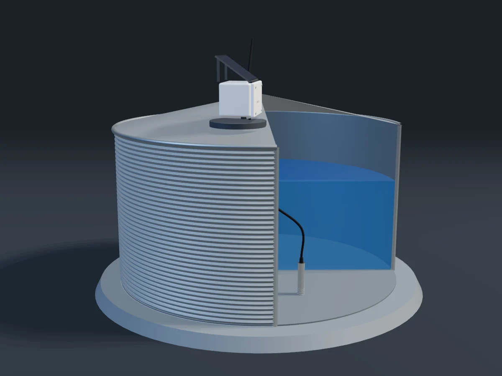

Kinetiq tank monitor
See every tank. Control the pump that fills it.
A solar-powered sensor reads the water level from the bottom of the tank and sends it by long-range radio to your house. Check levels and usage on your phone, and let the pump top the tank up automatically.
- Solar powered
- No mobile coverage needed
- Automatic pump control

Drag to turn it
5km
LoRa range to the receiver, line of sight
15min
Between readings, faster while the pump runs
1cm
Level resolution from the pressure probe
5m
Maximum tank depth
Design targets for the production unit. We'll publish measured figures as trials finish.
How it works
From the bottom of the tank to your phone
Five parts, each doing one job well. Nothing goes on the tank that needs mains power or a phone signal.
Pressure probe
A stainless probe sits on the tank floor and measures the weight of water above it, which gives the depth.
In the tankSensor unit
Reads the probe on a schedule. A small solar panel keeps its battery topped up, so there are no wires to run.
On the tankLoRa radio link
Sends each reading by long-range radio to the house, across paddocks and hills, with no mobile coverage needed.
Up to 5 km (target)Receiver
Sits in the house or shed, shows every tank on its screen and uploads readings over your Wi-Fi.
In the houseApp & website
Levels, usage, alerts and pump control from your phone or computer, wherever you are.
Anywhere
Live view & pump control
Start the pump from the kitchen, or let it look after itself
Your pump fills the tank from the bore, creek or dam. Run it by hand, set it to start and stop at the levels you choose, or limit it to off-peak hours.
- Manual start and stop, with a confirmation step
- Auto mode: start below one level, stop at another
- Schedules, such as overnight on cheaper power
- Safety cut-outs for dry running, overfilling and long run times

Who it's for
Built for the way New Zealand uses water
Dairy farms
Keep an eye on shed and wash-down water, and fill the tank from the bore automatically before milking.
Sheep & beef
Stock-water tanks spread over hill country, checked from the house instead of the ute.
Lifestyle blocks & rural homes
Know how much rainwater is left for the house and get an alert before it runs low.
Councils, marae, schools & businesses
Shared or community supplies with a clear record of levels and usage for everyone responsible.
Also from Kinetiq
Engineering beyond the tank


Join the trial
Put a Kinetiq monitor on your tank
We're looking for farms, rural properties and organisations around New Zealand to trial the tank monitor. Tell us about your tanks and we'll be in touch.